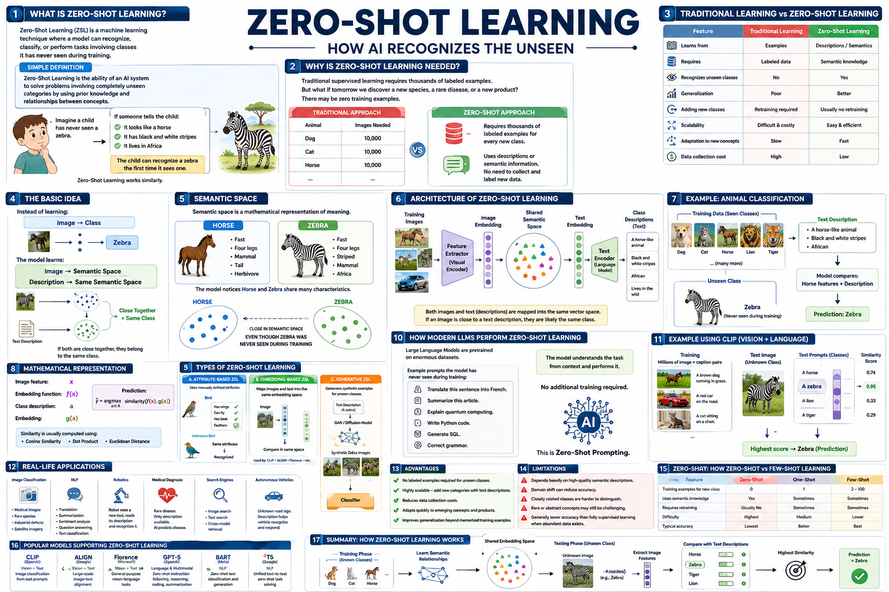

Master the art of recognizing unseen classes by bridging visual features with semantic embeddings.
Zero-Shot Learning (ZSL) enables models to recognize classes never seen during training by mapping visual features into a semantic embedding space (attributes, word vectors). This guide covers the 10 most important hyperparameters for ZSL, from embedding dimension and compatibility functions to ranking loss and hubness calibration, with practical PyTorch examples and a runnable ZSL demo.

xseen → CNN → φ(x)s(x,y) = φ(x)TW ψ(y)y* = argmax s(x, ψ(y))📊 ZSL pipeline — visual features projected into a semantic space for recognizing unseen classes
Dimensionality of the class attribute/word vectors. Larger dimensions encode richer semantics but require more training data.
Output dimension of the CNN backbone used to extract image features. Typically from a pretrained ResNet or ViT.
Shared dimension for mapping both visual and semantic features. Balances expressiveness and overfitting risk.
The scoring function between visual features and class semantics. Linear, bilinear, and cosine-based scores are common choices.
ZSL uses ranking-based losses (pairwise or hinge) to push correct class scores above incorrect ones by a margin.
ZSL often fine-tunes a pretrained backbone with a lower LR for the CNN and higher LR for the projection layers.
Batch size for ZSL training. Larger batches provide more negative examples for ranking loss, improving discriminative quality.
ZSL models converge quickly (10–50 epochs) with pretrained backbones. Monitor seen-class accuracy and unseen-class harmonic mean.
Adam/AdamW with moderate weight decay. ZSL models benefit from stronger regularization on the projection layers.
The choice of class representation — attributes, word vectors, or text descriptions. Drastically affects ZSL performance and scalability.
ZSL maps visual features and class semantics into a shared space where compatibility scores determine class membership. The architecture has three stages: visual encoding, semantic projection, and compatibility scoring.
Each component of the ZSL pipeline explained — from visual feature extraction to zero-shot classification.
Learns a mapping W: φ(x) ↦ ψ(y) that aligns visual features with class semantics. The learned compatibility enables zero-shot inference.
Uses unlabeled unseen-class images during training (without labels) to adapt the model. Improves GZSL performance substantially.
ZSL training focuses on learning a transferable visual-semantic mapping that generalizes to unseen classes.
Trains the model to rank the correct class above all others. Pairwise ranking with margin is the standard ZSL objective.
GZSL requires calibrating prediction scores to avoid bias toward seen classes. Calibrated stacking reduces this bias.
Ensures each seen class contributes equally to the batch, preventing dominant classes from skewing the ranking objective.
During training, evaluate on held-out seen classes as a proxy for unseen generalization. Track harmonic mean of seen+unseen accuracy.
ZSL is prone to overfitting on seen classes. These techniques improve generalization to unseen classes.
Regularize the compatibility matrix W to prevent overfitting to seen-class co-occurrence patterns that don't transfer.
Randomly drops semantic dimensions during training, forcing the model to use distributed attribute representations.
Mitigates the hubness problem where certain classes dominate nearest-neighbor predictions in high-dimensional embedding spaces.
Keep the pretrained CNN backbone frozen and only train the projection layers. Prevents distortion of general visual features.
A complete ZSL training pipeline using ResNet features, attribute embeddings, and bilinear compatibility. All hyperparameters annotated.
⬆️ Complete ZSL pipeline with bilinear compatibility and pairwise ranking loss. All ⑩ hyperparameters annotated.
| # | Hyperparameter | Purpose | Typical Range |
|---|---|---|---|
| ① | Semantic Embedding Dim | Dimensionality of class attribute/word vectors | 85–312 (attrs), 300–768 (word vecs) |
| ② | Visual Feature Dim | Output dimension of pretrained CNN backbone | 2048 (ResNet-101), 768 (ViT), 512 (CLIP) |
| ③ | Joint Embedding Dim | Shared projection space for visual-semantic alignment | 256–1024 |
| ④ | Compatibility Function | Scoring mechanism between visual and semantic features | Linear, Bilinear, Cosine |
| ⑤ | Loss Function | Ranking-based objective for discriminative alignment | Pairwise hinge (margin 0.1–1.0) |
| ⑥ | Learning Rate | Differential LRs for backbone vs projection layers | 1e-5 (backbone), 1e-4 to 1e-3 (projection) |
| ⑦ | Batch Size | Images per update; larger = richer negative sampling | 64–256 |
| ⑧ | Training Epochs | Total training duration; monitor harmonic mean | 10–50 |
| ⑨ | Optimizer & Weight Decay | Adam/AdamW with L2 regularization on projections | wd=1e-4 to 1e-3 |
| ⑩ | Semantic Space Type | Attributes vs word vectors vs CLIP text embeddings | Task-dependent choice |
Discovered automatically during ZSL training
Set manually before training begins
Use these defaults for attribute-based ZSL:
🔬 Tune: adjust margin → batch size → joint dim → semantic dropout. For word vector ZSL, increase joint dim to 1024.
| Feature | Classical ZSL | Generalized ZSL (GZSL) | CLIP-style ZSL |
|---|---|---|---|
| Test Classes | Unseen only | Seen + Unseen | Any (open vocabulary) |
| Training | Seen classes only | Seen classes only | Pretrained (no task-specific training) |
| Key Challenge | Semantic gap | Seen-class bias + hubness | Prompt engineering |
| Semantic Space | Attributes / word vectors | Attributes / word vectors | Text encoder (transformer) |
| Calibration | Not needed | Calibrated stacking required | Temperature scaling |
| Best For | Benchmark evaluation | Real-world deployment | Large-scale open-vocabulary tasks |
Test your knowledge with 25 questions covering ZSL architecture, semantic spaces, training, and evaluation.